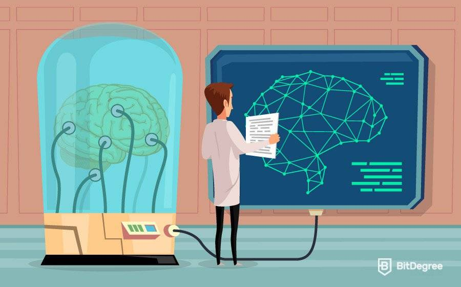

Evolución de la Inteligencia Artificial
La inteligencia artificial (IA) ha evolucionado considerablemente desde sus comienzos en la década de 1950. En los primeros años, la IA se centró principalmente en el desarrollo de sistemas de reglas y lógica simbólica para resolver problemas complejos. A medida que la capacidad de procesamiento y la cantidad de datos disponibles aumentaron, la IA se trasladó al aprendizaje automático, donde los algoritmos pueden aprender de los datos sin ser programados explícitamente.
La Era de la Computación

Se da durante la década de 1950, los científicos comenzaron a investigar cómo las computadoras podrían ser programadas para imitar la inteligencia humana. Esta era se caracterizó por la creación de algoritmos y programas de lógica que imitaban las habilidades cognitivas humanas.
La Era del Conocimiento
Se dio a fines de la década de 1970, los científicos comenzaron a investigar cómo las computadoras podrían utilizar la información almacenada para razonar y resolver problemas. Esta era se caracterizó por la creación de sistemas expertos y la inteligencia artificial basada en reglas.
La Era del Aprendizaje Automático

A partir de la década de 1980, los científicos comenzaron a investigar cómo las computadoras podrían aprender a partir de los datos. Esta era se caracterizó por la creación de algoritmos de aprendizaje automático y redes neuronales artificiales.
La Era del Aprendizaje Profundo
A partir de la década de 2010, los científicos comenzaron a investigar cómo las redes neuronales profundas podrían aprender a partir de grandes cantidades de datos sin la necesidad de programación manual.